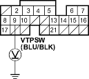
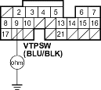
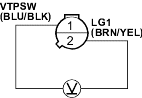
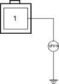

- Measure voltage between ECM/PCM connector terminal B9 and body ground.

Is there battery voltage?
YES |
- Repair open in the wire between the VTEC oil pressure switch and ECM/PCM (B9). |
NO |
- Go to step 12. |
- Turn the ignition switch OFF.
- Disconnect ECM/PCM connector B (24P).
- Check for continuity between ECM/PCM connector terminal B9 and body ground.

Is there continuity?
YES |
- Repair short in the wire between the VTEC oil pressure switch and the ECM/PCM (B9). |
NO |
- Substitute a known-good ECM/PCM and recheck (see page 11-6). If symptom/indication goes away, replace the original ECM/PCM. |
- Measure voltage between the VTEC oil pressure switch 2P connector terminals No. 1 and No. 2.

Is there battery voltage?
YES |
- Go to step 16. |
NO |
- Repair open in the wire between the VTEC oil pressure switch and G101.  |
- Turn the ignition switch OFF.
- Disconnect the VTEC solenoid valve 1P connector.
- Check for resistance between the VTEC solenoid valve 1P connector terminal No. 1 and body ground.

Terminal side of male terminal
Is there 14-30 ohms?
YES |
- Go to step 19. |
NO |
- Replace the VTEC solenoid valve. |